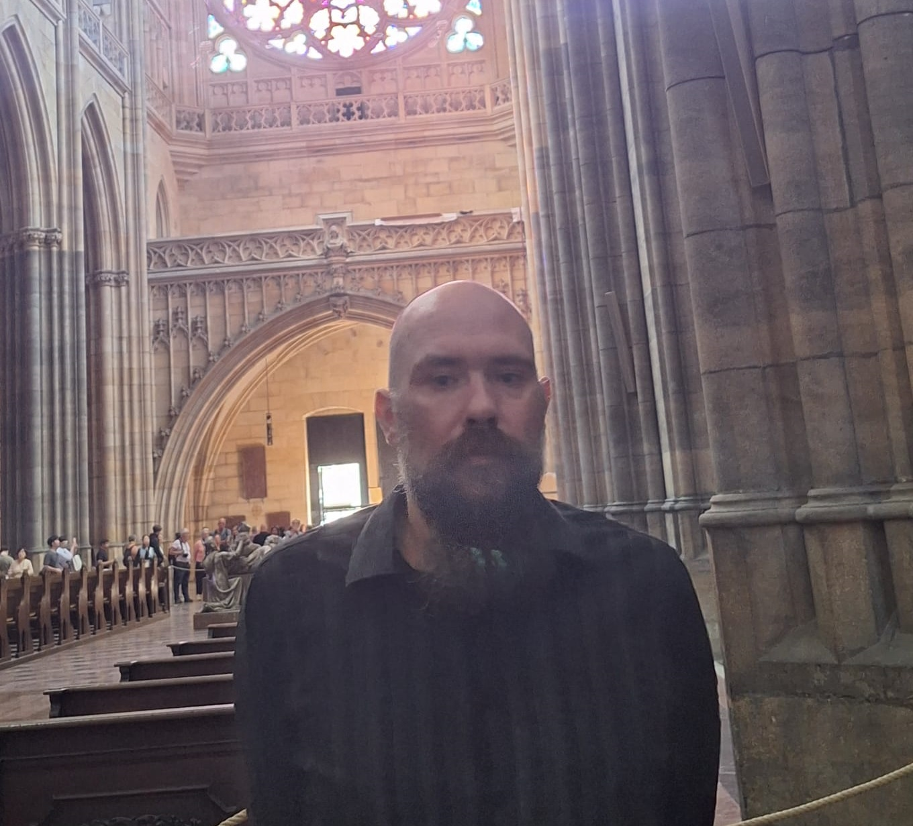
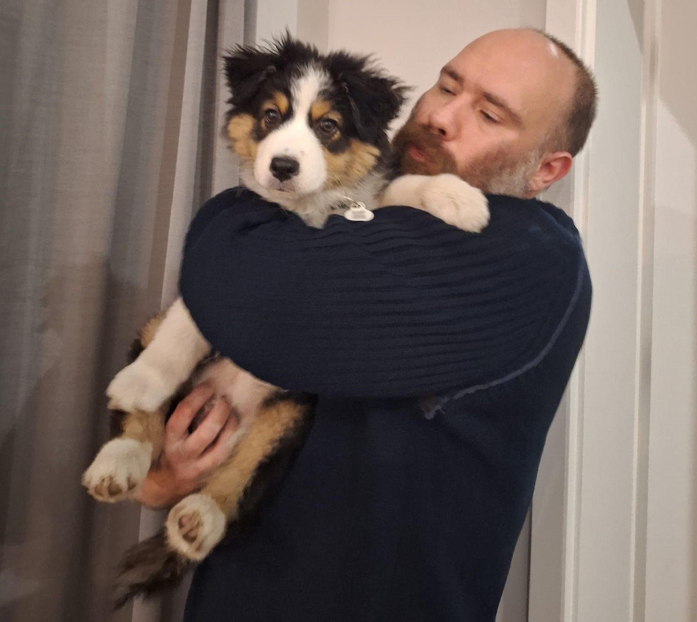
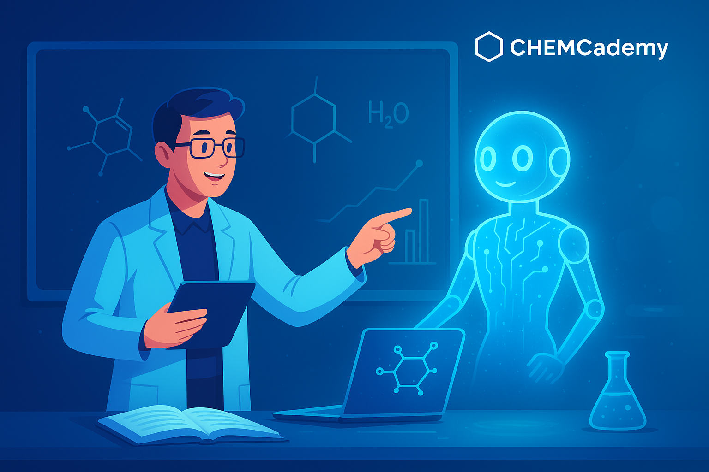
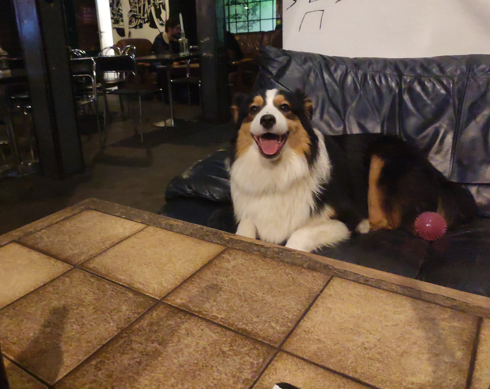

Dzień dobry! Nazywam się Tomasz Boinski i od ponad 15 lat uczę chemii. Przez ten czas miałem okazję pracować z setkami uczniów, pomagając im nie tylko przygotować się do egzaminów i olimpiad, ale przede wszystkim zrozumieć chemię i uwierzyć we własne możliwości.
Moi uczniowie wielokrotnie osiągali bardzo dobre wyniki w nauce. Ponad 20 z nich zostało finalistami lub laureatami Olimpiady Chemicznej. Wielu moich podopiecznych dostało się również na wymagające kierunki studiów, w tym na studia medyczne.
W swojej pracy staram się przede wszystkim dobrze poznać ucznia. Każdy ma inne tempo nauki, inne mocne strony i inne trudności. Dlatego zależy mi na tym, aby zajęcia były dopasowane do konkretnej osoby, a nie prowadzone według jednego schematu.
Moim celem jest nie tylko przygotowanie ucznia do sprawdzianu czy matury. Chcę, żeby z czasem zaczął samodzielnie rozumieć chemię, sprawnie rozwiązywać zadania i miał poczucie, że nawet trudne zagadnienia można opanować.
Swoją wiedzę zdobywałem na Politechnice Warszawskiej, a doktorat obroniłem w Instytucie Chemii Organicznej Polskiej Akademii Nauk. Specjalizuję się w chemii organicznej i spektroskopii.

Ukończyłem studia chemiczne na Politechnice Warszawskiej, a następnie obroniłem doktorat w Instytucie Chemii Organicznej Polskiej Akademii Nauk.
Lata pracy naukowej pozwoliły mi bardzo dobrze poznać chemię i nauczyły mnie analitycznego podejścia do problemów. Dziś tę wiedzę wykorzystuję przede wszystkim w pracy z uczniami.
Od ponad 15 lat zajmuję się nauczaniem chemii. Pracowałem między innymi w XII LO w Olsztynie oraz w LO im. Władysława IV w Warszawie.
Przez lata pracowałem zarówno z uczniami potrzebującymi nadrobić zaległości, jak i z osobami przygotowującymi się do matury rozszerzonej czy Olimpiady Chemicznej.
Jednym z największych powodów do satysfakcji są dla mnie sukcesy moich uczniów.
Ponad 20 moich podopiecznych zostało finalistami lub laureatami Olimpiady Chemicznej. Wielu uczniów dzięki systematycznej pracy dostało się również na wymarzone kierunki studiów, w tym na kierunki medyczne.
Każdy taki sukces cieszy mnie ogromnie, ale równie ważne są dla mnie mniejsze kroki – poprawa ocen, lepszy wynik z matury czy moment, w którym uczeń zaczyna samodzielnie rozwiązywać zadania, z którymi wcześniej miał problem.
Specjalizuję się w chemii organicznej i spektroskopii. Prowadzę również zajęcia online, wykorzystując nowoczesne narzędzia edukacyjne i wirtualną tablicę.
Technologia jest dla mnie przede wszystkim pomocą w nauce. Ma ułatwiać zrozumienie materiału, a nie zastępować nauczyciela.
Poza pracą lubię aktywnie spędzać czas. Chodzę po górach, jeżdżę na rowerze i chętnie odkrywam nowe miejsca.
Dużą częścią mojego życia jest również moja rodzina i mój australijski owczarek Freja. To bardzo energiczny pies, który często towarzyszy mi podczas spacerów, wycieczek i codziennej pracy.
W wolnych chwilach interesuję się również nowymi technologiami. Lubię sprawdzać, w jaki sposób można wykorzystać je w edukacji, aby nauka była dla ucznia bardziej przejrzysta, wygodna i skuteczna.
Wierzę jednak, że nawet najlepsza technologia nie zastąpi dobrego nauczyciela, który potrafi spokojnie wyjaśnić problem, odpowiedzieć na pytania i dostrzec, gdzie uczeń potrzebuje dodatkowego wsparcia.

W nauczaniu wykorzystuję nowoczesne rozwiązania, które mogą ułatwić uczniom systematyczną naukę.
Interaktywne materiały, dodatkowe ćwiczenia, wirtualna tablica i cyfrowe narzędzia pozwalają uczniowi wracać do omawianych zagadnień również poza lekcją.
Dzięki temu nauka nie kończy się w momencie zakończenia zajęć. Uczeń może powtórzyć materiał, przećwiczyć zadania i wrócić do tematów, które wymagają jeszcze trochę pracy.
Jednocześnie bardzo ważny pozostaje dla mnie bezpośredni kontakt z uczniem. Narzędzia cyfrowe mają wspierać naukę i ułatwiać pracę, ale najważniejsze jest dobre wyjaśnienie materiału oraz odpowiednie pokierowanie uczniem.
Zależy mi na tym, aby uczeń wiedział nie tylko co ma zrobić, ale przede wszystkim dlaczego dane rozwiązanie jest prawidłowe.

Freja, mój australijski owczarek, jest nie tylko moim wiernym towarzyszem, ale również nieoficjalną maskotką Chemcademy.
Towarzyszy mi podczas spacerów, wycieczek rowerowych i górskich wypraw. Czasami pojawia się również podczas lekcji online.
Jej obecność przypomina mi, że nauka nie zawsze musi być stresująca. Dobra atmosfera, cierpliwość i odrobina uśmiechu potrafią bardzo pomóc – szczególnie wtedy, gdy uczeń mierzy się z trudnym materiałem.
A jeśli podczas lekcji online w tle pojawi się Freja, można być pewnym, że nie jest to część programu nauczania. :)
Najważniejsze jest dla mnie jednak to, aby uczeń czuł, że po drugiej stronie ekranu jest nauczyciel, któremu naprawdę zależy na jego postępach.
